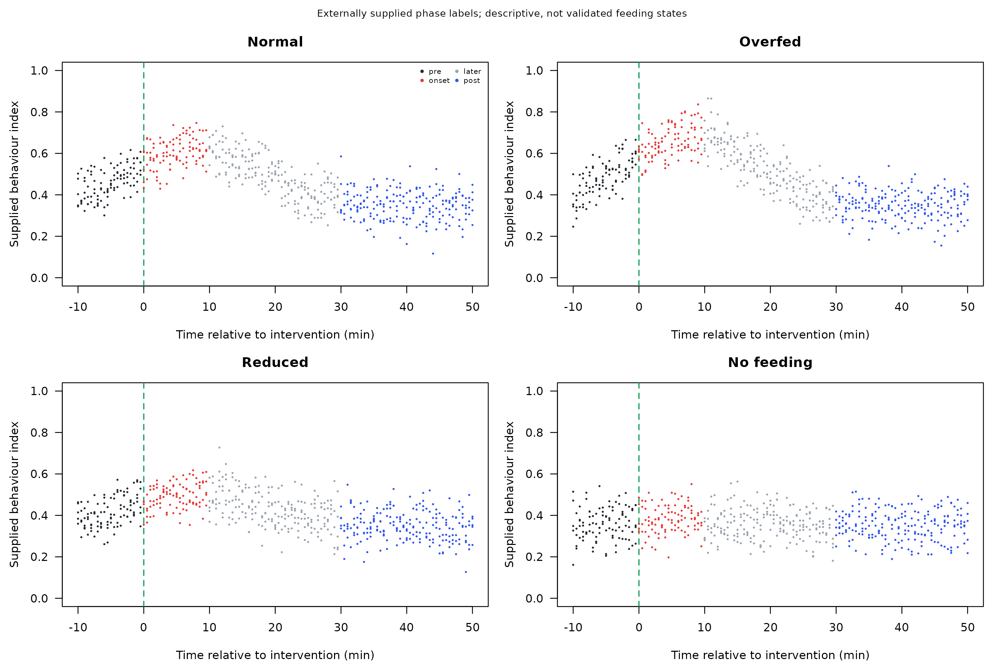
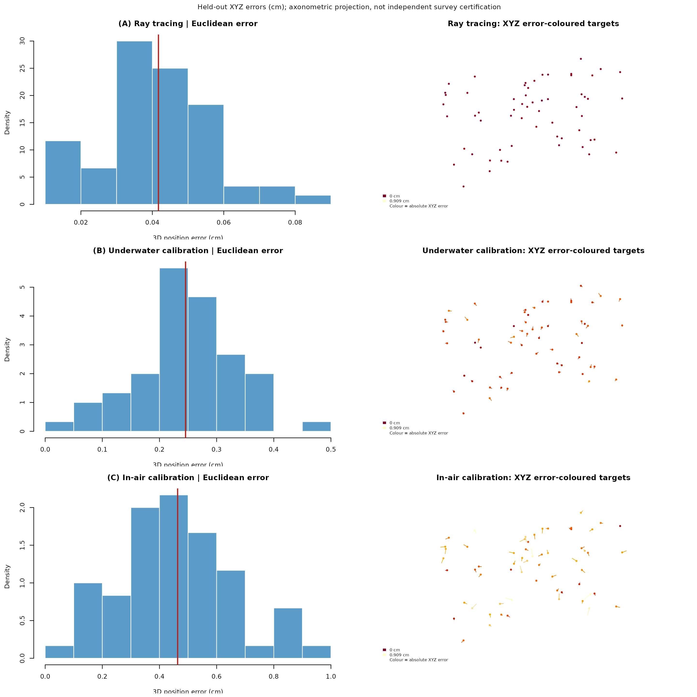
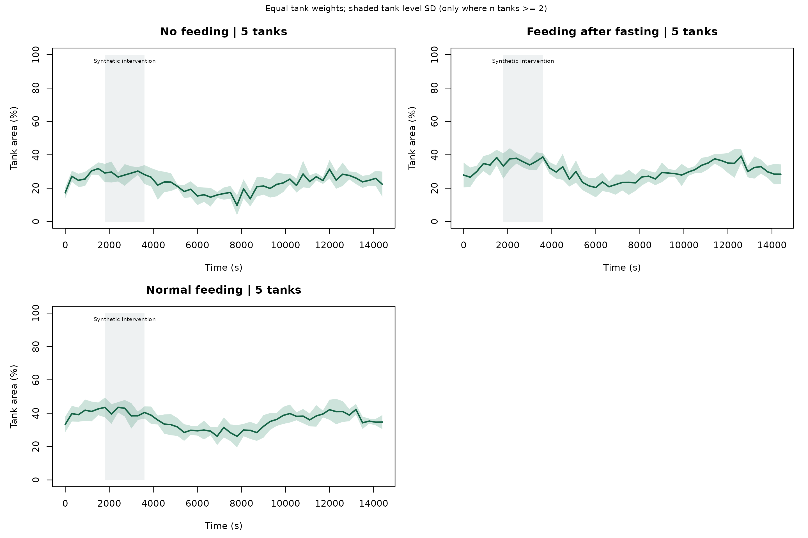
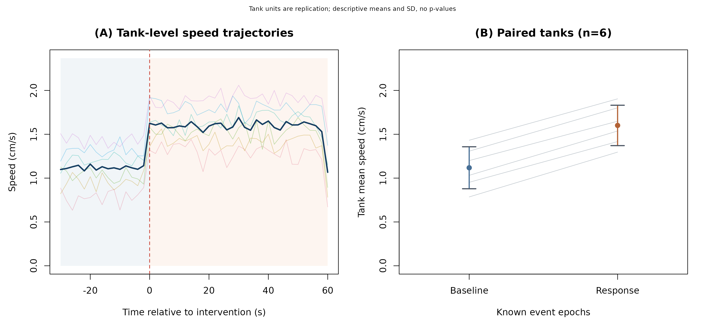
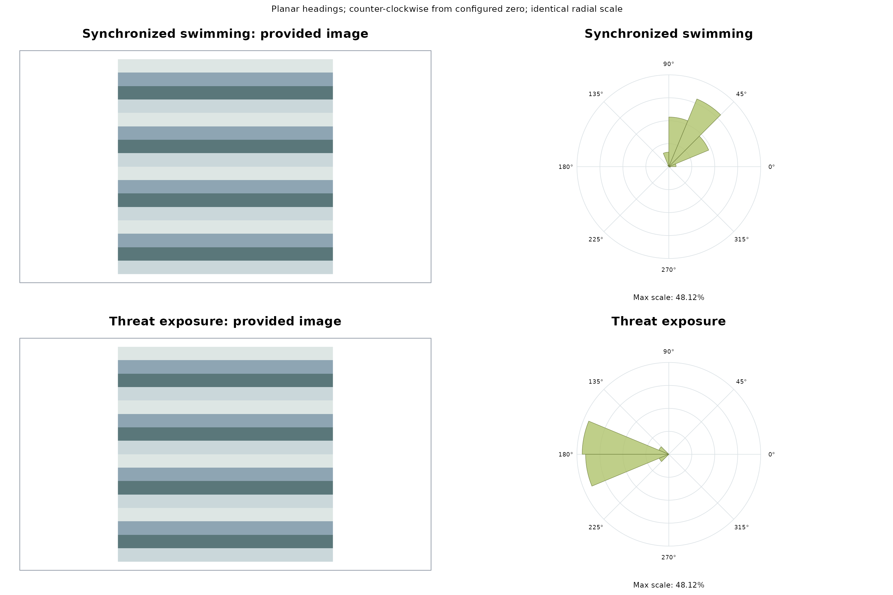

Five native publication figure families — reproducible synthetic workbook
Source:vignettes/articles/five-figure-workbook.Rmd
five-figure-workbook.RmdProvenance: This article reuses the synthetic workbook distributed with the tagged package at
inst/examples/publication_visualization_gallery.Rmd, with its website-specific metadata updated. No real fish data or verified biological effects are represented.
Scientific scope
All data in this document are deliberately synthetic. No feeding phase was independently annotated, no physical underwater calibration was performed, no tank was randomized, and no 3D or welfare outcomes can be inferred from these figures. These are demonstrations of visualization, input checking, and experimental-unit summaries.
1. Feeding index phases (descriptive)
The FBI-like values are invented fractions. The four phase categories are supplied explicitly; AquaTrajectories does not infer or scientifically validate their feeding interpretation.
feeding <- expand.grid(
scenario=c("Normal","Overfed","Reduced","No feeding"),
time_min=seq(-10,50,by=.5),
replicate=seq_len(5),
KEEP.OUT.ATTRS=FALSE, stringsAsFactors=FALSE)
response <- c("Normal"=.28,"Overfed"=.35,
"Reduced"=.16,"No feeding"=.02)
feeding$fbi <- pmin(1,pmax(0,
.35 + unname(response[feeding$scenario])*
exp(-((feeding$time_min-8)/13)^2)+
rnorm(nrow(feeding),0,.07)))
feeding$phase <- ifelse(feeding$time_min<0,"pre",
ifelse(feeding$time_min<10,"onset",
ifelse(feeding$time_min<30,"later","post")))
feeding_plot <- aqt_plot_feeding_states(feeding,event_time_min=0)
## scenario phase n_samples
## 1 Normal pre 100
## 2 Overfed pre 100
## 3 Reduced pre 100
## 4 No feeding pre 100
## 5 Normal onset 100
## 6 Overfed onset 1002. Calibration: 3D position residuals and spatial error map
The points are synthetic XYZ targets. Fit and holdout identifiers are disjoint within each method. The histograms show nonnegative Euclidean XYZ position errors, not signed pairwise-distance errors.
method_names <- c("Ray tracing","Underwater calibration","In-air calibration")
truth <- data.frame(
target_id=sprintf("XYZ%03d",seq_len(80)),
partition=rep(c("fit","holdout"),c(20,60)),
truth_x=runif(80,0,22),truth_y=runif(80,0,8),
truth_z=runif(80,0,11))
calibration <- do.call(rbind,lapply(seq_along(method_names),function(i){
d <- truth
d$method <- method_names[i]
d$estimate_x <- d$truth_x+rnorm(nrow(d),0,c(.025,.14,.28)[i])
d$estimate_y <- d$truth_y+rnorm(nrow(d),0,c(.025,.14,.28)[i])
d$estimate_z <- d$truth_z+rnorm(nrow(d),0,c(.025,.14,.28)[i])
d
}))
calibration_summary <- aqt_plot_calibration_comparison(
calibration,units="cm",require_holdout=TRUE)
print(calibration_summary)## method n_targets mean_error rmse_3d max_error
## 1 Ray tracing 60 0.04171218 0.04448452 0.08456348
## 2 Underwater calibration 60 0.24563594 0.25949947 0.45305427
## 3 In-air calibration 60 0.46352819 0.50045932 0.90925283
## mean_error_x mean_error_y mean_error_z
## 1 -0.000259591 0.004550490 0.006715079
## 2 -0.029813878 0.001124296 -0.010827080
## 3 -0.052140719 -0.031702019 -0.0316541553. Tank occupancy with independent-tank SD bands
The simulated percentage of surface occupied by fish is already
supplied as area_fraction. Five tank units per scenario are
used. The shaded areas are descriptive between-tank SD,
not confidence intervals inferred from individual frames.
occupancy <- expand.grid(
scenario=c("No feeding","Feeding after fasting","Normal feeding"),
tank_rep=seq_len(5),
time_s=seq(0,4*3600,by=300),
KEEP.OUT.ATTRS=FALSE,stringsAsFactors=FALSE)
occupancy$tank_id <- paste(occupancy$scenario,
occupancy$tank_rep,sep="_tank")
offset <- c("No feeding"=0,
"Feeding after fasting"=.07,"Normal feeding"=.12)
occupancy$area_fraction <- pmax(0,pmin(1,
.22+unname(offset[occupancy$scenario])+
.07*sin(occupancy$time_s/1500)+rnorm(nrow(occupancy),sd=.05)))
periods <- data.frame(start_s=1800,end_s=3600,
label="Synthetic intervention")
occ_summary <- aqt_plot_occupancy_timeseries(
occupancy,time_bin_s=300,band="sd",periods=periods)
## scenario time_s mean_fraction sd_tanks se_tanks n_tanks
## 1 Feeding after fasting 0 0.2789107 0.07396714 0.03307911 5
## 2 Feeding after fasting 300 0.2656326 0.05845922 0.02614376 5
## 3 Feeding after fasting 600 0.3005086 0.03463592 0.01548965 5
## 4 Feeding after fasting 900 0.3475326 0.04476196 0.02001816 5
## 5 Feeding after fasting 1200 0.3389380 0.06478149 0.02897116 5
## 6 Feeding after fasting 1500 0.3838288 0.04638402 0.02074357 5
## n_frames
## 1 5
## 2 5
## 3 5
## 4 5
## 5 5
## 6 54. Swimming speed aligned to a documented intervention
Illustrative individual speed samples are aggregated per tank. The right panel compares paired tank summaries; no p-values or statistical significance symbols are generated.
speed_data <- expand.grid(
tank_id=paste0("T",seq_len(6)),
time_s=seq(-30,90,by=.5),
KEEP.OUT.ATTRS=FALSE,stringsAsFactors=FALSE)
tank_effect <- setNames(seq(-.3,.3,length.out=6),
paste0("T",seq_len(6)))
speed_data$speed <- pmax(0,
1.1 + unname(tank_effect[speed_data$tank_id])+
ifelse(speed_data$time_s>=0 & speed_data$time_s<60,.5,0)+
rnorm(nrow(speed_data),0,.16))
speed_summary <- aqt_plot_speed_response(
speed_data,event_time_s=0,
baseline_s=c(-30,0),response_s=c(0,60),
speed_unit="cm/s",time_bin_s=2)
print(speed_summary$summary)## epoch mean_speed sd_tanks n_tanks speed_unit
## 1 baseline 1.118098 0.2394481 6 cm/s
## 2 response 1.600945 0.2303589 6 cm/s5. Circular swimming direction and supplied frame panes
The angle distribution is synthetic and uses counter-clockwise mathematical XY conventions. Actual video pixel coordinates may be clockwise (y down) and must be transformed explicitly. The optional raster panes below are synthetic colour patterns, not fish frames.
heading <- data.frame(
condition=rep(c("Synchronized swimming","Threat exposure"),each=500),
heading_rad=c(rnorm(500,pi/3,.4),rnorm(500,pi,.25)))
# Optional already-loaded source frames can be passed as named rasters.
# Here they are simulated abstract colours solely to exercise that layout.
fake_frame <- grDevices::as.raster(matrix(
rep(c("#DDE6E4","#8EA5B3","#5A777A","#CAD7DA"),64),
nrow=16,ncol=16))
frames <- list("Synchronized swimming"=fake_frame,
"Threat exposure"=fake_frame)
heading_summary <- aqt_plot_heading_rose(
heading,bins=16,clockwise=FALSE,scale="fraction",
frame_rasters=frames)
## condition bin center_deg n_observations weighted_count proportion
## 1 Synchronized swimming 1 11.25 19 19 0.038
## 2 Synchronized swimming 2 33.75 113 113 0.226
## 3 Synchronized swimming 3 56.25 192 192 0.384
## 4 Synchronized swimming 4 78.75 130 130 0.260
## 5 Synchronized swimming 5 101.25 38 38 0.076
## 6 Synchronized swimming 6 123.75 4 4 0.008
## mean_heading_rad circular_resultant_length
## 1 1.009987 0.9231092
## 2 1.009987 0.9231092
## 3 1.009987 0.9231092
## 4 1.009987 0.9231092
## 5 1.009987 0.9231092
## 6 1.009987 0.9231092Publication export
All five functions draw on the active base graphics device. For a
vector PDF, surround a call with
grDevices::pdf('figure.pdf', width = 12, height = 8) and
grDevices::dev.off(). For TIFF, use
grDevices::tiff('figure.tiff', width = 3200, height = 2200, res = 300).
These procedures only export a visualization; they do
not establish empirical scientific validity.
Evaluation
The five new functions can be tested in the source repository using:
testthat::test_local(
filter = "publication-visualization-suite",
reporter = "summary"
)
rcmdcheck::rcmdcheck(args = "--no-manual", error_on = "warning")For the original, source-controlled training workbook see the v0.1.1 release artifact.